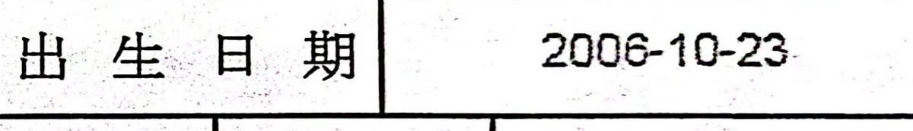

V01d（Yuki）
@V01d_Digit
@yuki_ciallo 抱抱

神楽 由紀 🏳️⚧️🍥
@yuki_ciallo
是的，我已经快20岁了
但无论是我自己的感觉，还是周围人的观察，都不认为我像成年人
相反，都说我更像是16岁——恰好是我刚休学的年纪
可以说，我自从2022年初中毕业，中考结束后，心理年龄就被冻结了
我长不大了
正好，我也不想长大
……我恐惧长大 https://t.co/wLowyg2Axm